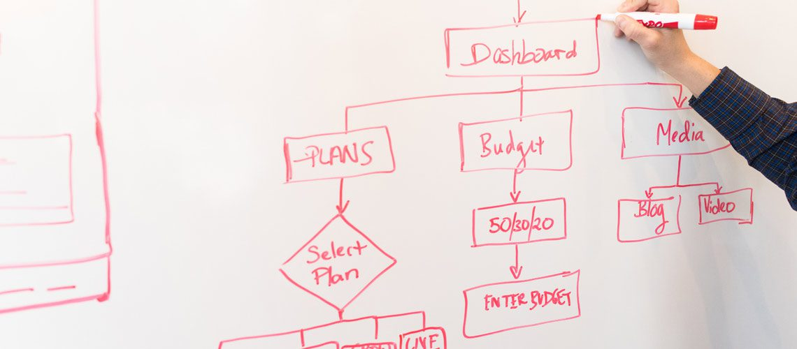

Wstęp
Tworzenie strony www według poniższych wskazówek to podstawa sukcesu!
Wdrożenie poniższych wskazówek da stronie internetowej większą szansę na pokazanie swojej oferty zainteresowanym osobom oraz pozyskanie potencjalnego klienta. Projektując lub przeprojektowując stronę internetową, łatwo jest ugrzęznąć w estetyce. (Ten odcień zielonego po prostu nie wygląda najlepiej.... Czy nie byłoby wspaniale, gdybyśmy umieścili logo na górze po prawej stronie?... A może by tak umieścić animację w środku strony?). Jeśli naprawdę chcesz dobrze zaprojektować swoją stronę internetową: dotrzeć do możliwie dużej liczby adresatów, na których Ci naprawdę zależy (optymalny profil targetu osobowego), chcesz zwiększyć liczbę odwiedzin, wygenerować leady itp.), to musisz zająć się czymś więcej niż tylko wyglądem i stylem Twojej strony internetowej. Żyjemy w świecie z ponad miliardem stron internetowych, na których odwiedzający mogą potencjalnie wylądować. Dlatego szczególnie ważne jest, aby naprawdę dobry projekt był łatwy w obsłudze. Twoja strona internetowa musi być łatwa w użyciu. Jednocześnie bezpośrednie doświadczenie użytkownika musi być pozytywne. Odwiedzanie strony www powinno być przyjemne i, w zależności od jej zawartości, może nawet zabawne.
Oczywiste jest, że funkcjonalność i użyteczność strony oraz reakcje i emocje ich użytkowników to dyscypliny same w sobie. Możesz spędzić lata na badaniach, aby zrozumieć ich złożoność. Chcemy dać Ci kilka jasnych wskazówek, jak znaleźć drogę do osiągnięcia zamierzonego celu, jaki jest stworzenie optymalnej dla Twoich celów strony internetowej. Dlatego też poniżej znajdziesz listę zasad użyteczności dla użytkownika (user experience) i jego pozytywnych wrażeń, które możesz zastosować przy każdym kolejnym projekcie tworzenia stron internetowych.
Prostota projektu graficznego
Za każdym razem, gdy podchodzisz do dużego projektu internetowego, pamiętaj o tym, co następuje: Większość odwiedzających nie przejmuje się tym, jak wygląda Twoja strona. Twoi goście nie przychodzą na Twoją stronę, aby ocenić, jak genialny jest Twój projekt. Przychodzą na nią, ponieważ chcą wykonać określoną czynność lub dostać określone informacje. Jeśli dodajesz do swojej strony niepotrzebne elementy projektu-elementy, które nie działają, utrudniasz użytkownikom osiągnięcie tego, po co przyszli na Twoją stronę. Z punktu widzenia użyteczności i doświadczenia użytkownika, prostota jest Twoim najlepszym przyjacielem. Aspekt ten może być realizowany na różne sposoby. Oto kilka przykładów:
- Kolory: Nie używaj zbyt wielu. Podręcznik interakcji między człowiekiem i komputerem (Handbook of Computer-Human Interaction) zaleca używanie maksymalnie pięciu (plus/minus dwa) różnych kolorów w projekcie strony internetowej.
- Fonty: Czcionki na Twojej stronie internetowej powinny być łatwe do odczytania i, jak w przypadku kolorów, nie należy używać zbyt wielu różnych czcionek. Zazwyczaj zaleca się używanie maksymalnie trzech różnych czcionek w maksymalnie trzech różnych rozmiarach.
- Grafika: Grafiki należy używać tylko wtedy, gdy pomagają one użytkownikom w wykonaniu konkretnej akcji lub gdy posiadają specjalną funkcję (nie należy wstawiać grafiki, tylko losowo w dowolnym miejscu).
Hierarchia wizualna strony internetowej
Zasada hierarchii wizualnej jest ściśle związana z zasadą prostoty. Polega na aranżowaniu i organizowaniu elementów strony internetowej w sposób, który w naturalny, intuicyjny sposób doprowadzi odwiedzających stronę do najważniejszych jej elementów. Pamiętaj, że jeśli chodzi o optymalizację użyteczności i pozytywnych wrażeń użytkownika, celem jest nakłonienie ludzi do wykonywania określonych czynności w sposób, który wydaje im się naturalny i wygodny. Na przykład, dostosowując pozycję, kolor lub rozmiar niektórych elementów, możesz ustrukturyzować swoją stronę w sposób, który w naturalny sposób przyciąga odwiedzających do jej najważniejszych elementów.
Łatwa nawigacja
Intuicyjna nawigacja witryny pomaga odwiedzającym szybko znaleźć to, czego szukają. Najlepiej byłoby, gdyby odwiedzający odwiedzili Twoją witrynę i nie musieli zastanawiać się, czy, gdzie i jak pójść dalej. Przejście z punktu A do punktu B na Twojej stronie musi być łatwe. Poniższe wskazówki pomogą zoptymalizować nawigację po stronie:
- Struktura Twojej głównej nawigacji powinna być prosta (najlepiej umieszczona u góry strony).
- Stopka Twojej strony może również zawierać funkcję nawigacji.
- Na każdej stronie z wyjątkiem strony głównej, użyj okruszków (breadcrumbs), aby odwiedzający wiedzieli, gdzie się znajdują i jak się tam dostali.
- U góry strony powinna znajdować się funkcja wyszukiwania, dzięki której użytkownicy będą mogli łatwo wyszukiwać hasła.
- Zbyt wiele opcji nawigacyjnych przynosi efekt przeciwny do zamierzonego.
- Nie idź zbyt głęboko z kategoriami. W większości przypadków najlepiej jest, jeśli nawigacja nie jest głębsza niż trzy poziomy.
Jeszcze jedna wskazówka:, gdy już ustalisz, jak powinna wyglądać nawigacja strony (powyżej), trzymaj się jej. Opisy i ich pozycja powinny wyglądać tak samo na każdej stronie witryny.
Spójność
Nawigacja nie tylko powinna być spójna, ale ogólny wygląd każdej kolejno odwiedzanej podstrony powinien być spójny. Tła, schematy kolorów, czcionki, a także styl w tekstach to aspekty, w których jednolita konstrukcja ma pozytywny wpływ na łatwość obsługi i wygodę użytkownika. Nie chcemy powiedzieć, że wszystkie strony powinny mieć identyczny układ. Powinieneś stworzyć różne układy dla określonych typów stron (na przykład inny dla stron docelowych, trochę inny dla stron informacyjnych i tak dalej). Powinieneś jednak konsekwentnie używać tych układów, aby odwiedzający mogli łatwo zobaczyć, jakie informacje im podasz i gdzie. Nie przesadzaj. Wyobraź sobie, jak czułbyś się, jako gość Twojej strony, gdyby każda podstrona pomocy miała inny, układ, który nie jest spójny z resztą stron.
Dostępność
Według ostatnich badań amerykańskiej firmy ComScore wykorzystanie tabletów do prowadzenia działalności online w USA wzrosło o 30%. Korzystanie z Internetu ze smartfonów wzrosło o 78% w tym samym okresie. Jak z tego nauka? Wnioski można wyciągnąć samemu. Aby strona internetowa była przyjazna dla użytkownika, witryna musi być zgodna z różnymi urządzeniami (ich systemami operacyjnymi i przeglądarkami) używanymi przez użytkowników. W szerszym znaczeniu oznacza to inwestowanie w wysoce elastyczną strukturę strony internetowej, na przykład w responsywny projekt oraz standardy tworzenia stron internetowych. W responsywnej stronie www zawartość i jej format są automatycznie dostosowywane do wielkości urządzenia, z którego korzysta użytkownik.
W ostatecznym rozrachunku ważniejsze jest, aby Twoja witryna zapewniała satysfakcję użytkownikom na różnych platformach, a nie to, by wyglądała na nich identycznie. Tylko Ty to widzisz, Twoi goście nie. Może to oznaczać konieczność trzymania się konwencji projektowych specyficznych dla platformy, a nie próbowanie umieszczania unikalnych elementów projektu na Twojej stronie, które mogą być obce dla użytkowników na niektórych platformach. I skoro już tu jesteśmy, dochodzimy do następnej zasady...
Konwencje
Istnieją pewne konwencje projektowania stron internetowych, które stały się znane większości użytkowników Internetu na przestrzeni lat. Należą do nich na przykład:
- Główna nawigacja strony w górę lub w lewo.
- Logo w lewym górnym rogu (lub środku) na stronie.
- Logo, które można kliknąć, i przenosi użytkownika z powrotem na stronę początkową.
- Łącza, które zmieniają kolor lub wygląd, gdy przesuniesz nad nim wskaźnik myszy.
Aby zapewnić odwiedzającym jak najlepsze wrażenia w Twojej witrynie, powinieneś trzymać się doświadczeń, które odwiedzający już znają. To prawdziwa zaleta. Możesz użyć tych informacji, aby ułatwić nawigację w witrynie.
Wiarygodność
Konwencje projektowania stron internetowych, więc elementy projektu/strategie, które są już znane odwiedzającym, mogą zawsze pomóc. Aby nadać Twojej stronie internetowej większą wiarygodność. Jeśli chcesz utworzyć stronę, która oferuje swoim gościom najlepsze doświadczenia użytkownika, wiarygodność (trust) nie jest to bez znaczenia.
Jednym z najlepszych sposobów, w jaki można poprawić wiarygodność swojej strony, jest uczciwość. Opisać produkt lub usługę w rzetelny i jasny sposób. Niech Twoi goście nie muszą grzebać w dziesiątkach podstron, aby znaleźć to, co naprawdę oferujesz. Wystarczy być uczciwym i poświęcić swojej ofercie poczesne miejsce na stronie, gdzie można dokładnie i wyczerpująco opisać Twój cel/produkt/ofertę/propozycje.
Kolejna wskazówka dotycząca poprawy wiarygodności: Strona z cenami. Pokusa, aby zachęcić potencjalnych klientów do skontaktowania się z Tobą, aby dowiedzieć się więcej na temat Twoich cen, jest zrozumiała i duża. Jeśli jednak ceny będą wyświetlane otwarcie na stronie internetowej, Twoja firma będzie bardziej wiarygodna i poważna. Ważnym elementem, który powinna zawierać strona internetowa to certyfikat SSL.
Użytkownik jest najważniejszy
Najważniejsze jest to, że użyteczność i wrażenia użytkownika zależą od preferencji użytkowników. Spójrz na to tak:, dla kogo projektujesz stronę? Dla Twoich użytkowników. Wymienione tu zasady, są dobrym punktem wyjścia. Jednak w miarę doskonalenia witryny jeszcze ważniejsze jest ich ciągłe udoskonalanie, uruchamianie testów, uzyskiwanie opinii i wprowadzanie zmian na podstawie tych wyników.
Jeśli chodzi o użyteczność i wrażenia użytkownika, nie ma mowy o obojętności i kompromisie! Czuj się jak Twoi goście i pamiętaj o nich na każdym kroku.
Dlaczego warto wdrożyć powyższe punkty?
Tworzenie stron internetowych to bardzo wymagające zadanie. Od projektu strony będzie zależało, jak postrzegać będą nas potencjalni klienci i czy będzie funkcjonalna dla użytkownika. Powinniśmy pamiętać, że na projektowanie strony składa się wiele więcej elementów, niż wymieniliśmy. Powyższe aspekty to podstawa dobrego projektu strony www. Pamiętajmy, by nie pomijać projektu graficznego strony, gdyż tylko z nim jesteśmy w stanie stworzyć naprawdę dobrą stronę internetową przynoszącą korzyści klientowi.
Każda szanująca się projektowania stron www czytaj - firma zajmująca się profesjonalnym tworzeniem stron www, na samym początku zawsze robi projekt, gdzie uwzględnia powyższe punkty. Web Design to nie tylko znajomość programów graficznych, lecz również znajomość użyteczności strony. Najważniejsze to budowanie odczuć internauty, który porusza się po naszej stronie.
Wyżej wymienione elementy są podstawowe, przy tworzeniu skutecznej strony www. Pamiętajmy, że zleceniodawca zawsze chce mieć wymierne korzyści z posiadania strony, to jest jego inwestycja.